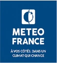
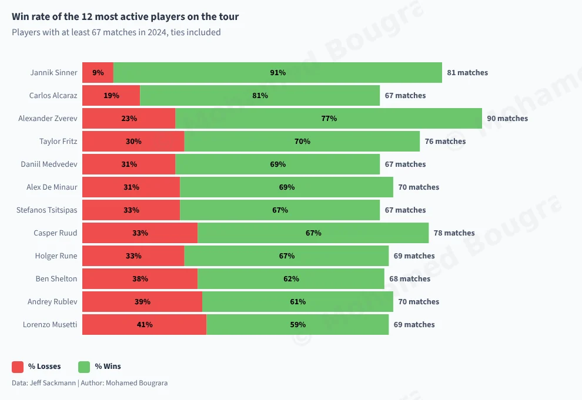
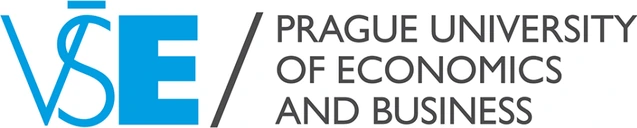
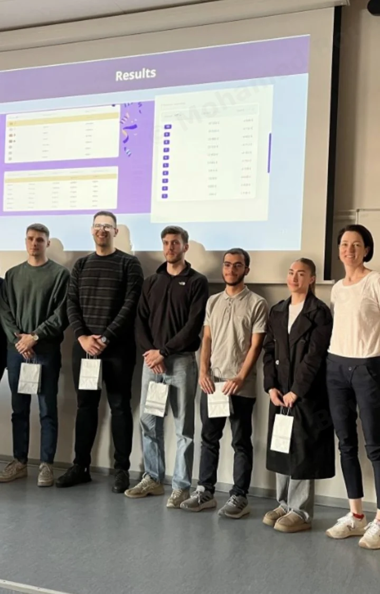
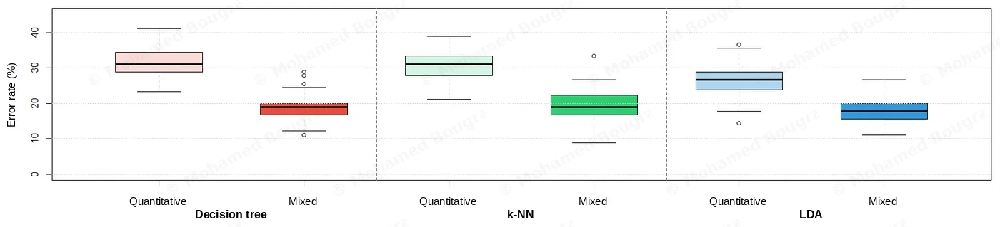
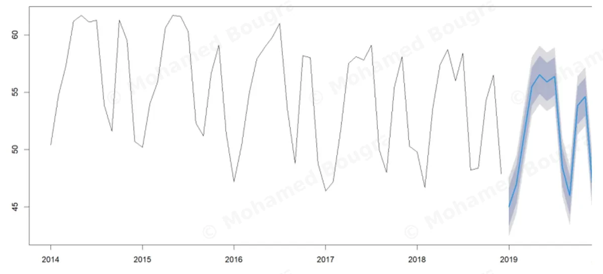
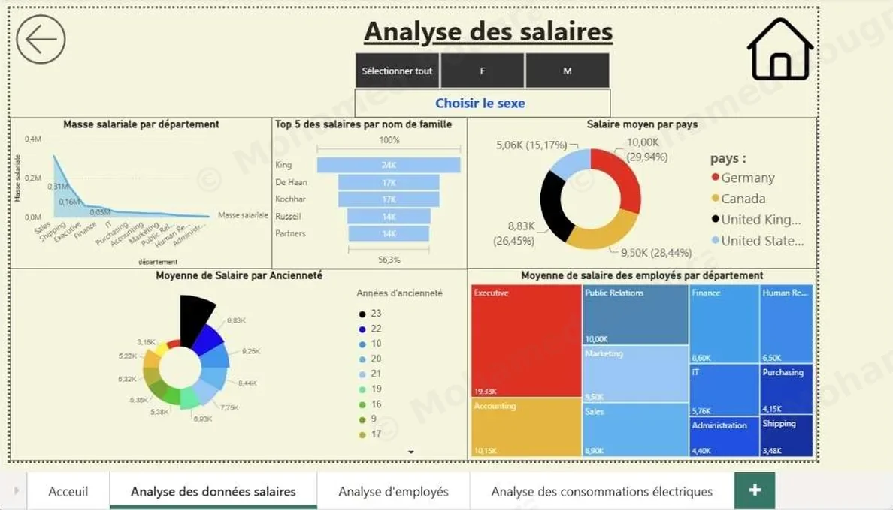
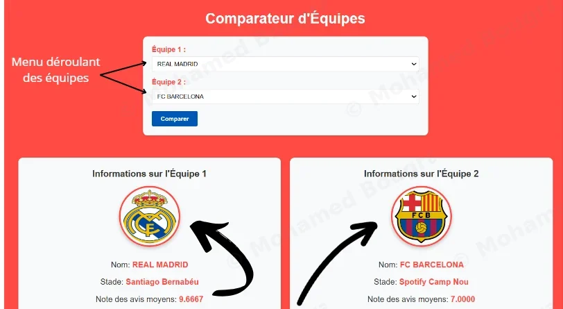
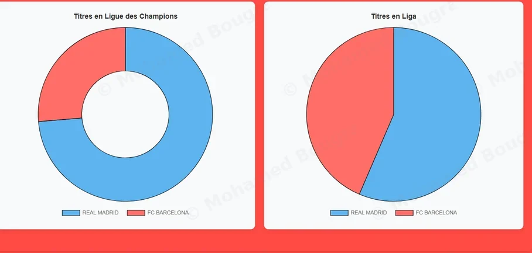

Projects
Streamlit app: LCA
I built a web app end to end for Life-Cycle Assessment (a product’s environmental impact).
Researchers upload their results and get interactive charts instead of reworking a spreadsheet for every assumption:
- scenario comparison (small, medium or large battery);
- normalisation to a common scale;
- filters by indicator.
“Mohamed made sure that what we had in mind would be feasible. […] We could validate the dashboard with some first tests.”
Monthly financial reporting, moved from Excel to Power BI
The monthly financial reporting pack was compiled by hand in Excel. I replaced it with three Power BI dashboards connected to the data warehouse.
They query its 20 tables in SQL, then rely on a star schema (the figures at the centre, linked to the dimensions they are analysed by) and on DAX measures, Power BI’s calculation formulas.
The managers now read their figures as charts.
These dashboards are internal to the CEA and their data is not published: the diagram shows none of it.
Monthly pack compiled by hand in Excel
replaced by
- Data warehouse20 tables, queried in SQL
- Star schemaindicators calculated in DAX
- 3 Power BI dashboardsrefreshed daily at 5 a.m.
- Read by the managers
Monthly cost reconciliation, automated in VBA
CEA-LITEN’s finance managers matched labour costs against declared hours by hand, in Excel, to charge every hour to the right research contract.
I documented their method, then automated it in VBA.
I prototyped the tool during my internship, then built and rolled it out on an apprenticeship contract. I wrote a guide for the fifteen managers so the tool runs without me.
This macro is internal to the CEA and its data is not published: the diagram shows none of it.
Time spent on the reconciliation, each month
- 4 departments
- 15 managers, with a guide
Six years of road accidents, queried in SQL
I loaded nearly 2 million official rows into PostgreSQL and modelled them as a star schema to answer seven road-safety questions.
- 67.5% of deaths outside built-up areas, for 36.1% of accidents
- +14% deaths in 2023 with a naive join, fixed with
ROW_NUMBER() - 23 checks on data quality, rerun after every load
See a query
Deaths per year, year-on-year change and an index with 2019 = 100: LAG() and FIRST_VALUE() over one named window.
SELECT
year,
killed,
round(100.0 * (killed - lag(killed) OVER w) / lag(killed) OVER w, 1) AS change_pct,
round(100.0 * killed / first_value(killed) OVER w, 1) AS index_2019
FROM yearly
WINDOW w AS (ORDER BY year)
ORDER BY year;
2024 National DataViz Challenge
A national data-visualisation challenge, on climate data from Météo-France, France’s national weather service. Our team designed a data visualisation (Tableau, R) and a video explaining our analyses. After a selection round in Grenoble against my whole year group, we won the national title.
UGA campus signage dashboard
The 162 road and wayfinding signs of the Université Grenoble Alpes campus are mapped one by one in ArcGIS: each sign’s maintenance and cost can be read on the map, and filtering the map updates the indicators. The dashboard is published online.
The 2024 ATP season in charts
I analysed the 3,076 matches of the 2024 ATP tour in JavaScript: player profiles, then match dynamics, filterable by format. Durations are summarised by the median and quartiles, which a five-hour match cannot skew. Missing data, such as the Roland-Garros durations, is flagged.
View the code
Match duration by surface and by ranking-gap band: d3.group groups the matches, d3.quantile derives the quartiles and the median.
var diff = Math.abs(d.winner_rank - d.loser_rank);
// Ranking-gap band
var cat = 4;
if (diff <= 20) cat = 0;
else if (diff <= 50) cat = 1;
else if (diff <= 100) cat = 2;
else if (diff <= 250) cat = 3;
// Aggregated statistics: quartiles by surface and by band
d3.group(brut, function (d) { return d.surface; }, function (d) { return d.cat_id; })
.forEach(function (parCat, surface) {
parCat.forEach(function (valeurs, cat) {
var mins = valeurs.map(function (d) { return d.minutes; })
.sort(function (a, b) { return a - b; });
if (mins.length >= 3) {
stats.push({ surface: surface, cat_id: cat,
q1: d3.quantile(mins, 0.25), median: d3.quantile(mins, 0.5),
q3: d3.quantile(mins, 0.75), count: mins.length });
}
});
});
Open the charts
Prague data challenge, as a team and in English
A week of business intelligence in Power BI, taught entirely in English, at the Faculty of Informatics and Statistics of the Prague University of Economics and Business: the BIP Data Analytics Fundamentals, an Erasmus+ Blended Intensive Programme. It closed with a data challenge, which our team won.

My Prague English teacher’s LinkedIn postDrinking water worldwide, country by country
In 2015, the UN promised safe drinking water at home to everyone by 2030. I prepared the WHO/UNICEF estimates for 235 countries and territories in Python (pandas), then measured where the world stands in an 8-page Power BI report (113 DAX measures) and an interactive map.
Share of the world’s population with safe drinking water at home
- 2.14 billion people without safe drinking water at home
- × 6.3 the speed of progress needed to keep the 2030 promise
- After 2100 in Sub-Saharan Africa, at its own pace
Screening for liver cirrhosis without a biopsy
Cirrhosis is normally diagnosed by liver biopsy, an invasive procedure. Can it be spotted from a simple blood test instead? Commissioned by the TIMC laboratory (CNRS / UGA).
- Before any calculation, checking that the patient groups are comparable
- Summarising the blood test into 3 indicators that keep 80% of the variance (PCA)
- Automatically grouping similar patients: two methods compared
- What matters: liver enzymes and platelets. Sex makes no difference
Monitoring player performance: Grenoble Foot 38
A Ligue 2 club, the second tier of French football. In a business intelligence project built in Tableau and R, I helped monitor players' physical performance in training, working directly with the assistant coach.
- Writing the functional and technical specifications from the staff’s requirements
- Producing daily analytical reports for the technical staff
- Designing tools to track performance and training workload, session by session
Club data is confidential.
Predicting heart disease from a routine work-up
A routine check-up measures blood pressure, cholesterol, age. Those figures alone plateau at 74% accuracy. What is missing?
- What the patient describes carries the information the measurements cannot capture
- Pain that appears on exertion: 75% of those patients are ill; without it, the large majority are healthy
- Adding those symptoms to the check-up takes accuracy to 83%
What I would recommend: keep the model that lets the fewest ill patients through.
Of three methods compared, I ruled out one that succeeded almost as often but sent one ill patient in three back home. The one I kept catches 78 in 100, and wrongly flags only 12 in 100 healthy patients (sensitivity 78%, specificity 88%).
In screening, the expensive mistake is the patient you miss, not the needless test.
Stated limit: 16.6% residual error. This is a screening aid, not a diagnosis.

Forecasting hotel occupancy in Auvergne-Rhône-Alpes
Regional occupancy swings by 15 points between trough and peak. Open too many floors and you pay staff to service empty rooms: the model has to say what next month brings.
- The extremes fall in August (61.7%) and in December (46.4%)
- Once decomposed, the residual keeps neither trend nor seasonality
- Three forecasting methods put head to head, the one that errs least wins: Holt-Winters, delivered with its margin of uncertainty

Is saving break points enough to win?
Players are often judged on how they hold up under pressure. I tested that reflex on the 3,076 matches of the 2024 ATP season, entirely in JavaScript: a season summary per player, then measuring the link, for the 87 players with at least 30 matches with statistics.
- The link exists but is moderate: a correlation of 0.57 between break points saved and win rate.
- All points won on serve explain winning better: a correlation of 0.71.
- Carlos Alcaraz is 2nd in wins but 29th in break points saved; Ben Shelton is the reverse, 2nd and 20th.
View the code
Each match counts for both of its players (the winner and the loser): a season summary per player, then the Pearson correlation with the win rate.
// One season summary per player: matches, wins, break points, serve points
const players = new Map();
function add(name, won, bpSaved, bpFaced, servePts, servePtsWon) {
const p = players.get(name) ?? { matches: 0, wins: 0, bpSaved: 0, bpFaced: 0, servePts: 0, servePtsWon: 0 };
p.matches += 1; p.wins += won;
p.bpSaved += bpSaved; p.bpFaced += bpFaced;
p.servePts += servePts; p.servePtsWon += servePtsWon;
players.set(name, p);
}
for (const m of matches) { // each match counts for both players
if (m.w_bpFaced !== '') add(m.winner_name, 1, +m.w_bpSaved, +m.w_bpFaced, +m.w_svpt, +m.w_1stWon + +m.w_2ndWon);
if (m.l_bpFaced !== '') add(m.loser_name, 0, +m.l_bpSaved, +m.l_bpFaced, +m.l_svpt, +m.l_1stWon + +m.l_2ndWon);
}
// Players with at least 30 matches with statistics
const season = [...players].filter(([, p]) => p.matches >= 30).map(([name, p]) => ({
name,
winRate: p.wins / p.matches,
bpSavedRate: p.bpSaved / p.bpFaced,
servePtsRate: p.servePtsWon / p.servePts,
}));
corr(season, 'bpSavedRate', 'winRate'); // 0.57
corr(season, 'servePtsRate', 'winRate'); // 0.71Academic coursework
A four-page report you navigate like a website
This four-page Power BI report (headcount, salaries, electricity use) is navigated like a website: back arrow, home button, tabs at the bottom.
Nothing is static. Selecting “F” in the sex filter at the top of the report recalculates, in one go:
- the payroll by department;
- the five highest salaries;
- the split by country;
- the seniority breakdown.

Enlarge the reportA statistics site for the Spanish league
I built a small site for comparing the players and teams of La Liga, from the database to the screen. The data lives in a MySQL database: no figure on screen is written into the page, each one is the result of a query.
Some queries are not trivial. The best passer of each team requires a group-wise maximum; the most common position, a grouped count.
Two mechanisms I wanted to build:
- a search that suggests names from the first letter, because a dropdown of several hundred players cannot be browsed;
- a reviews section where a visitor rates a team, comments, and can delete their own review; the average rating then appears on the team’s page.
Key query: the top passer of each team
Finding a group’s maximum and the row that reaches it is a classic SQL trap: a plain GROUP BY gives the right maximum but an arbitrary name from the team. The query first computes each team’s maximum, then joins the players to it: only the one who reaches it remains, and two tied players both appear.
SELECT p.TEAM, p.NAME, p.`COMPLETED PASS` AS MaxPasses
FROM merged_player_data p
JOIN (SELECT TEAM, MAX(`COMPLETED PASS`) AS m
FROM merged_player_data
GROUP BY TEAM) b
ON b.TEAM = p.TEAM AND b.m = p.`COMPLETED PASS`
ORDER BY MaxPasses DESC

Three classifiers compared over 500 resamples
On the Iris dataset (150 flowers described by four measurements), three methods are compared: k-NN, discriminant analysis and CART trees, replayed 500 times. LDA wins, with a 2% median error rate.
NBA web scraping & stats
NBA statistics are collected automatically, by querying an API and reading web pages, then shaped with Pandas. A static site publishes the standings.
Paris 2024 Olympics rankings scraper
The official Paris 2024 rankings are collected, then structured by country, discipline and medal.
Designing the warehouse before filling it
A client wanted to know whether its marketing campaigns were actually working. Its data sat in five files of different formats, across two countries.
Working in a pair, we brought it together into a warehouse that answers the client’s five questions. I designed the warehouse structure, and revised it once after our supervisor’s feedback.
What a football club is allowed to publish
An amateur club publishes its squad list every season. Is it allowed to? Who answers for that data, and how long may it be kept?
I answered under the GDPR, and filled in the processing register required by the CNIL, the French data protection authority.
Database: fitness company
A fitness company’s database, designed before any data went in:
- modelling: the conceptual model (ER diagram), then the logical model;
- structuring: the same fact is never stored twice;
- querying: SQL queries, in MySQL and in Access.
Rugby stats: the French national team over 152 years
2,745 international matches (1871-2023) worked through in Excel, without a line of code, to place France against the nine other leading nations:
- cleaning: two date formats brought down to the year;
- creating variables: each match’s result, each team’s participation;
- analysing univariate, then bivariate (venue, World Cup), with COUNTIF and SUMIF.
Result: 62% of matches won at home, 39% away. Limit: France only played from 1906, which skews a raw ranking.